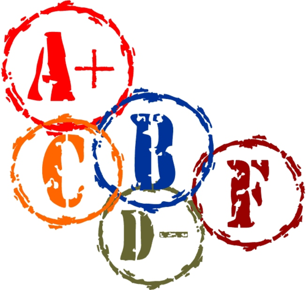

—

In order to get a grade for your productes, you will need to perform a self-evaluation. As we harvest your code from your git repos, we will push out a self-evaluation report form (in plain txt). You will have 25 hours to fill it out and push it back to origin.
for correctness, via "test fests." That is, we will run your test harnesses on the instructor’s and your peers’ tests.
for systematic design, via code inspections. That is, we will read select pieces of your solutions to the programming tasks and check them against basic software quality criteria, design standards taught in Fundamentals I, II, OOD and Logic.
For any disagreements concerning your grades, first see the person who assigned the grade. If you can’t resolve the issue, see your section TA. As a last resort, see your instructor.